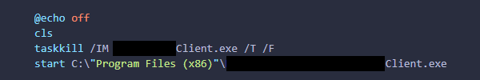

One frequently occurring issue is caused by users impatiently relaunching an application, resulting in duplicate background processes that never load properly. This inundates the Help Desk with the same repetitive tickets. I placed this .BAT script on users' desktops to help mitigate the issue.

When executed, this allows the user to solve their own issue, freeing up IT time and resources for other tasks.
Tickets
Everyone understandably has varying levels of tech-savviness. There are users who don't know how to scroll on a laptop touchpad, and there are users who can attempt to troubleshoot their issue by themselves.
I write documentation to assist as wide a band of that spectrum as possible.
Sometimes users don't want to be bombarded with dizzying walls of text, and prefer visuals that are easy on the eyes.
I created this graphic to display as conference room TV screensavers to show users how to connect their devices.